Code
colors <- c("darkorange","darkorchid","cyan4")The idea is to show some packages and options that I use on a daily basis, and leave code with annotations and defaults that I normally use. We will go through the packages one by one with examples, but these can be grouped into the following categories.
Where do we start from? Define some data and some defaults plots that we would have and would like to modify.
library(tidyverse)
library(palmerpenguins)
set.seed(123)
mtcars <- mtcars |>
rownames_to_column(var = "name") |>
as_tibble() |>
sample_n(20)
penguins <- penguins |>
filter(complete.cases(penguins))
p1 <- ggplot(mtcars, aes(wt, mpg, label = name)) +
geom_point(color = "cyan4", size = 2)
p1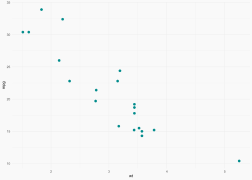
p2 <- ggplot(penguins, aes(x = bill_length_mm, y = bill_depth_mm)) +
geom_point(aes(color = species), size = 2)
p2
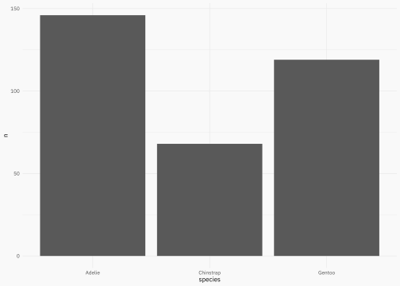
colors <- c("darkorange","darkorchid","cyan4")We’re ready to go!
{showtext}Source:https://github.com/yixuan/showtext.
This package makes easy to use typography! Do you want some typography from https://fonts.google.com/? You want it? You got it!
p2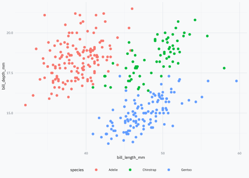
{ggrepel}Source: https://ggrepel.slowkow.com/articles/examples.html.
This package has been on CRAN/github for a while now. Package that in combination with the data argument can make simple and effective annotations.
library(ggrepel)
p_repel1 <- p1 +
geom_text_repel(color = "gray40", family = plot_font_family)
p_repel1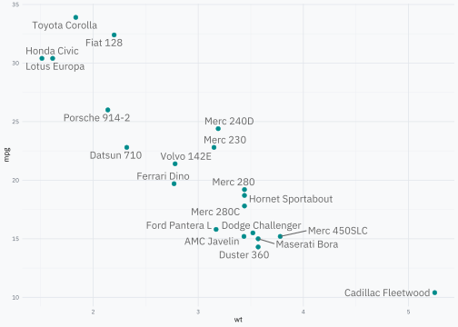
p_repel2 <- p1 +
geom_text_repel(
data = ~ filter(.x, mpg > 30),
color = "gray40",
family = plot_font_family,
force = 20
)
p_repel2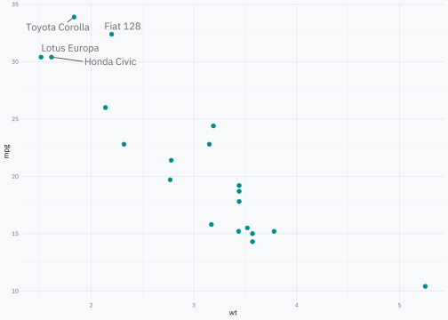
{gghighlight}Source: https://yutannihilation.github.io/gghighlight/articles/gghighlight.html.
geom_* + aes().library(gghighlight)
p1 +
gghighlight(
# interest subset
mpg > 30,
# additional parameters
label_key = name,
keep_scales = TRUE,
label_params = list(color = "gray40", label.r = 0, fill = "gray95"),
# can change previous parameters
unhighlighted_params = list(size = 1.5, color = "darkorchid")
)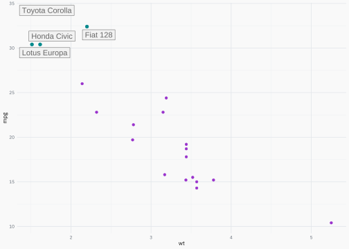
{ggforce}Source: https://ggforce.data-imaginist.com/.
library(ggforce)
p1 +
geom_mark_hull(
aes(filter = mpg > 30, label = "Interesting"),
description = "Lightweight vehicles have high performance.",
color = "gray70",
fill = "gray90",
concavity = 5,
# control width text
label.minwidth = unit(100, "mm"),
# how much distance before show legend
label.buffer = unit(2.5, "mm"),
label.colour = "gray30",
label.fontsize = 8,
description.fontsize = 7,
label.family = plot_font_family,
description.family = plot_font_family
) +
# use circle for points
geom_mark_circle(
aes(filter = wt > 3.75, label = NULL, description = name),
color = "gray70",
fill = "transparent",
label.fontsize = 8,
description.fontsize = 7,
label.family = plot_font_family,
description.family = plot_font_family
)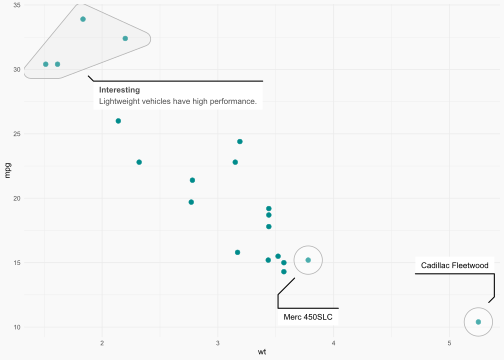
And other geom_mark_* like hull, circle, ellpse, rect.
p2 +
geom_mark_ellipse(
aes(fill = species, label = species),
alpha = 0.1,
color = "transparent", # a nice touch sometimes! (imho)
label.colour = "gray30",
label.family = plot_font_family,
description.family = plot_font_family,
label.fontsize = 8,
description.fontsize = 7,
# label.fontface = "plain",
# this is just for blogpost
expand = unit(-5, "mm"),
radius = unit(5, "mm")
) +
geom_mark_circle(
aes(
filter = coalesce(bill_length_mm, 0) == max(bill_length_mm, na.rm = TRUE),
label = NULL,
description = "A rare penguin!"
),
color = "gray70",
fill = "transparent",
label.fontsize = 8,
description.fontsize = 7,
label.family = plot_font_family,
description.family = plot_font_family
) +
theme(legend.position = "none") +
labs(x = NULL, y = NULL)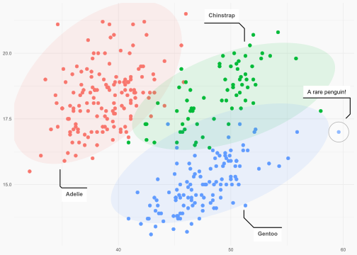
Now imagine we used a \(K\)-means algorithm:
dcenters <- penguins |>
select(species, bill_length_mm, bill_depth_mm) |>
filter(!is.na(bill_length_mm)) |>
filter(!is.na(bill_depth_mm)) |>
group_by(species) |>
summarise(across(everything(), median)) |>
select(-species) |>
mutate(cluster = as.character(row_number()))
dcenters# A tibble: 3 × 3
bill_length_mm bill_depth_mm cluster
<dbl> <dbl> <chr>
1 38.8 18.4 1
2 49.6 18.4 2
3 47.4 15 3 bnd <- penguins |>
summarise(
min(bill_length_mm, na.rm = TRUE) - 1,
max(bill_length_mm, na.rm = TRUE) + 1,
min(bill_depth_mm, na.rm = TRUE) - 1,
max(bill_depth_mm, na.rm = TRUE) + 1
) |>
as.list() |>
unlist() |>
as.vector()
p2 +
geom_voronoi_tile(
aes(fill = cluster, group = -1),
data = dcenters, alpha = 0.2, bound = bnd
) +
geom_voronoi_segment(
aes(group = -1),
data = dcenters, color = "gray90", bound = bnd
) +
xlim(bnd[1], bnd[2]) +
ylim(bnd[3], bnd[4]) +
scale_fill_viridis_d(direction = -1, option = "C") +
# its better put point over all layers
geom_point(
aes(color = species),
size = 2,
shape = 21,
color = "gray90"
) +
theme(legend.position = "right")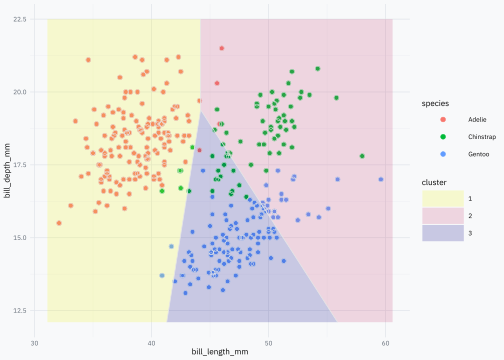
{ggfittext}Source: https://github.com/wilkox/ggfittext.
This package have a lot of features to work with strings in ggplot objects, particulary when you use treemaps.
A love the simple and useful function geom_bar_text() + geom_col() combo.
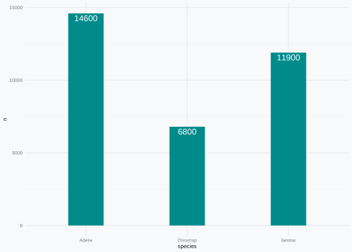
p3 +
geom_bar_text(
formatter = scales::comma_format(),
padding.y = grid::unit(2.5, "mm")
)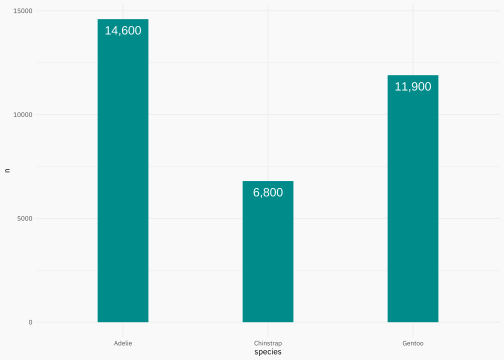
p3 +
geom_bar_text(
formatter = scales::comma_format(),
place = "bottom",
padding.y = grid::unit(2.5, "mm")
){scales}Source: https://scales.r-lib.org/.
You use this package using a label_* function in the labels argument of scale_* function.
[1] "123" "456,678" "100,000" "$123" "$456,678" "$100,000"# I know the correct alternative is Mpg
miles_per_gallon <- label_comma(suffix = " mi/gal")
wt_lbl <- label_comma(scale = 1000, suffix = " lbs")
p1 +
scale_y_continuous(
labels = miles_per_gallon,
name = "fuel consumption"
) +
scale_x_continuous(
labels = wt_lbl,
name = "weigth"
)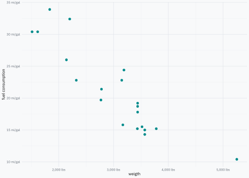
{ggparty}Source: https://github.com/martin-borkovec/ggparty.
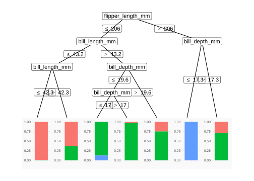
ggparty(penguinct) +
geom_edge(color = "gray80") +
geom_edge_label(color = "gray50", size = 2.5) +
geom_node_label(
aes(label = splitvar),
color = "gray30",
label.col = NA, # no box
size = 3,
family = plot_font_family,
label.padding = unit(0.5, "lines"),
ids = "inner"
) +
geom_node_plot(
gglist = list(
geom_point(
aes(x = bill_length_mm, y = bill_depth_mm, color = species),
size = 1, alpha = 0.5
),
scale_color_viridis_d(end = 0.9),
guides(color = guide_legend(override.aes = list(size = 5))),
theme_get(),
theme(axis.text = element_text(size = rel(0.65))),
labs(x = NULL, y = NULL)
),
scales = "fixed",
id = "terminal"
) +
geom_node_label(
aes(label = sprintf("Node %s\nn = %s", id, nodesize)),
ids = "terminal",
size = 3,
family = plot_font_family,
label.col = NA, # no box
nudge_y = 0.01
)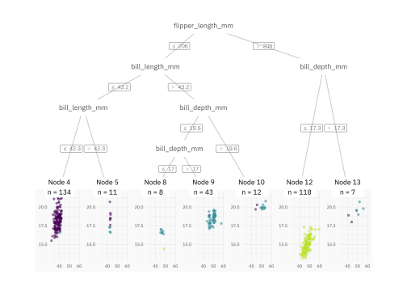
{parttree}Source: https://github.com/grantmcdermott/parttree.
I use the {parttree} package when the model is simple, or when I want to explain the decision tree algorithm.
# remotes::install_github("grantmcdermott/parttree")
library(parttree)
# 2 independent variables
penguinct2 <- ctree(
species ~ bill_length_mm + bill_depth_mm,
data = penguins,
control = ctree_control(maxdepth = 3)
)
ggplot(penguins, aes(x = bill_length_mm, y = bill_depth_mm)) +
geom_parttree(
data = penguinct2,
aes(fill = species),
alpha = 0.2,
color = "gray60",
) +
geom_point(aes(col = species))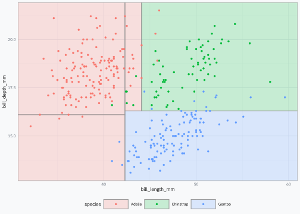
{ggparty} + {parttree}
dpred_node <- penguins |>
select(species, bill_length_mm, bill_depth_mm) |>
mutate(
id = predict(penguinct2, type = "node", newdata = penguins),
species_pred = predict(penguinct2, newdata = penguins)
) |>
group_by(id) |>
summarise(
species = unique(species_pred),
bill_length_mm = mean(bill_length_mm),
bill_depth_mm = mean(bill_depth_mm)
)
dpred_node# A tibble: 5 × 4
id species bill_length_mm bill_depth_mm
<int> <fct> <dbl> <dbl>
1 3 Adelie 37.4 15.2
2 4 Adelie 38.5 18.4
3 6 Gentoo 47.4 14.9
4 8 Adelie 43.0 18.2
5 9 Chinstrap 49.5 18.4dparttree <- parttree(penguinct2)
dparttree <- dparttree |>
as_tibble() |>
rename(id = node) |>
select(-path)
ggp <- ggparty(penguinct2)
ggp$data <- ggp$data |>
as_tibble() |>
left_join(
dpred_node |> select(id, species),
by = join_by(id)
)
ggp +
geom_edge(color = "gray80") +
geom_edge_label(color = "gray50", size = 2.5) +
geom_node_label(
aes(label = str_replace_all(splitvar, "_", " ")),
color = "gray30",
label.col = NA, # no box
size = 3,
family = plot_font_family,
label.padding = unit(0.5, "lines"),
ids = "inner"
) +
geom_node_plot(
gglist = list(
geom_point(
aes(x = bill_length_mm, y = bill_depth_mm, color = species),
size = 1, alpha = 0.5
),
geom_parttree(
data = penguinct2,
aes(fill = species),
alpha = 0.1,
color = "gray60",
),
geom_point(
data = dpred_node,
aes(x = bill_length_mm, y = bill_depth_mm, color = species),
size = 3
),
geom_rect(
data = dparttree,
aes(xmin = xmin, xmax = xmax, ymin = ymin, ymax = ymax, fill = species),
alpha = 0.5,
color = "gray40",
),
scale_fill_manual(values = colors),
scale_color_manual(values = colors),
# scale_color_viridis_d(end = 0.9),
# scale_fill_viridis_d(end = 0.9),
guides(color = guide_legend(override.aes = list(size=5))),
theme_get(),
theme(axis.text = element_text(size = rel(0.65))),
labs(x = NULL, y = NULL)
),
scales = "fixed",
# id = "all"
id = "terminal"
) +
geom_node_label(
aes(label = str_glue("{species}\nn = {nodesize}")),
ids = "terminal",
size = 3,
family = plot_font_family,
label.col = NA, # no box
nudge_y = 0.01
)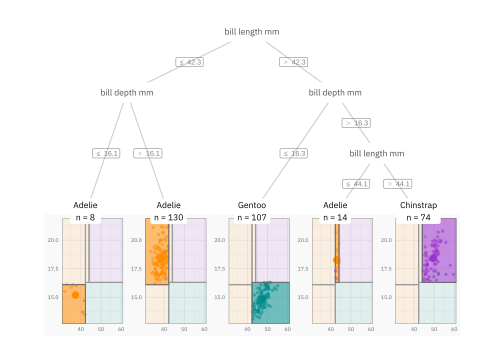
{patchwork}Source: https://patchwork.data-imaginist.com/articles/patchwork.html.
library(patchwork)
p2 <- p2 +
scale_color_manual(values = colors) +
theme(legend.position = "none")
p3 <- p3 +
geom_col(aes(fill = species), width = 0.5) +
scale_fill_manual(values = colors, name = NULL)
pp <- ((p1 / p3) | p2) +
plot_layout(
widths = c(1, 2),
guides = "collect"
) +
plot_annotation(
title = "Some ggplot2 objects",
subtitle = "The plot (a) shows one aspect, while (b) presents additional data.",
tag_levels = "a",
tag_prefix = "(",
tag_suffix = ")"
)
pp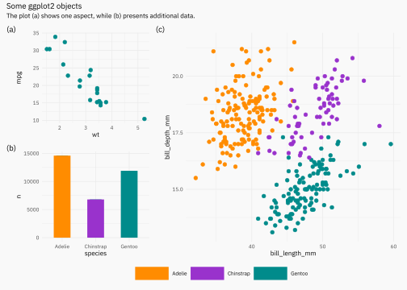